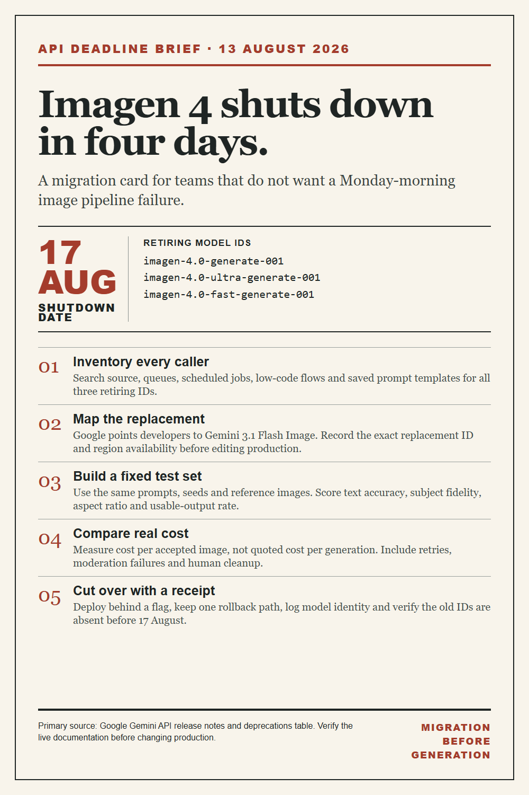

API migration · August 13, 2026
Imagen 4 shuts down in four days. Treat the migration like a release.
Google's current Gemini API deprecations table lists August 17, 2026 as the shutdown date for three Imagen 4 model IDs. A model-name swap is not enough: you need a small, reproducible migration receipt.

The five-step cutover
- Inventory every caller. Search code, workflow tools, scheduled jobs and saved templates for the three retiring IDs.
- Pin the replacement ID explicitly. Google points developers toward Gemini 3.1 Flash Image; check current availability, region and pricing before treating that as settled.
- Run a fixed test set. Keep prompts, reference images, seed strategy and acceptance rules stable so the before/after comparison means something.
- Measure accepted-image cost. Price per request is less useful than cost per image that passes your quality and policy checks.
- Cut over behind a flag. Keep a rollback path and store the model ID, request settings and test receipt with the release.
Useful comparison step. If you want one interface for comparing current image models while building the test set, open SYNTX.AI. The checklist above is complete without clicking it.
Affiliate disclosure: I may earn a commission if you subscribe through the SYNTX.AI link.